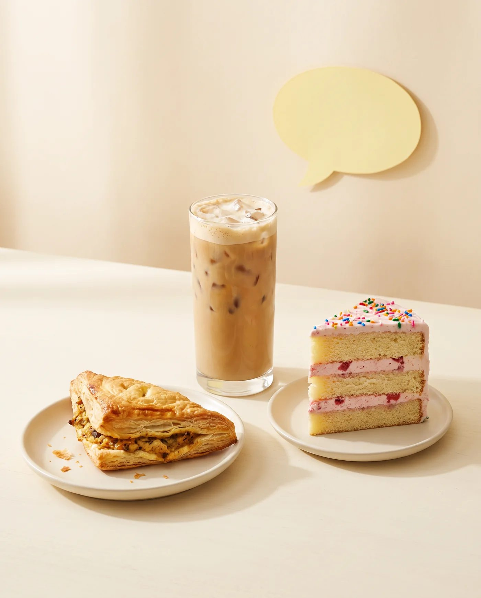

Sweet & Coffee Week · edição Cartoon
Guia de fotos
Guia de fotos
dos combos
Cada foto tem uma missão: o público precisa reconhecer os 3 itens do combo de relance — salgado, doce e bebida — e ter vontade de provar. Este guia mostra, com exemplos, como chegar lá.